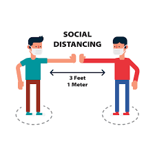

About Covid-19
In early 2020, a new virus began generating headlines all over the world because of the unprecedented speed of its transmission.
Its origins have been traced to a food market in Wuhan, China, in December 2019.
The virus (officially named SARS-CoV-2) has been responsible for millions of infections globally, causing hundreds of thousands of deaths. The United States is the country most affected.
The disease caused by an infection with SARS-CoV-2 is called COVID-19, which stands for coronavirus disease 2019.
Most people infected with the COVID-19 virus will experience mild to moderate respiratory illness and recover without requiring special treatment. Older people, and those with underlying medical
problems like cardiovascular disease, diabetes, chronic respiratory disease, and cancer are more likely to develop serious illness.
The best way to prevent and slow down transmission is to be well informed about the COVID-19 virus, the disease it causes and how it spreads.
How does Covid-19 virus spread ?
The COVID-19 virus spreads primarily through -
- Droplets of Saliva
- Discharge from nose
Know the Symptoms !
- Shortness of breath.
- Dry cough that gets more severe over time.
- Fever
- Fatigue
Less common symptoms:
- Muscle aches and pains.
- Sore throat.
- Loss of taste or smell.
- Headache
Serious symptoms:
- Difficulty breathing
- Chest pain or pressure.
- Loss of speech or movement

Preventive measures to reduce the chance of getting infected.
- Wash your hands regularly with soap and water, or clean them with alcohol-based hand rub.
- Maintain at least 1 metre distance between you and people coughing or sneezing.
- Cover your mouth and nose when coughing or sneezing.
- Avoid touching your face.
- Wear your mask properly covering both your nose and mouth.